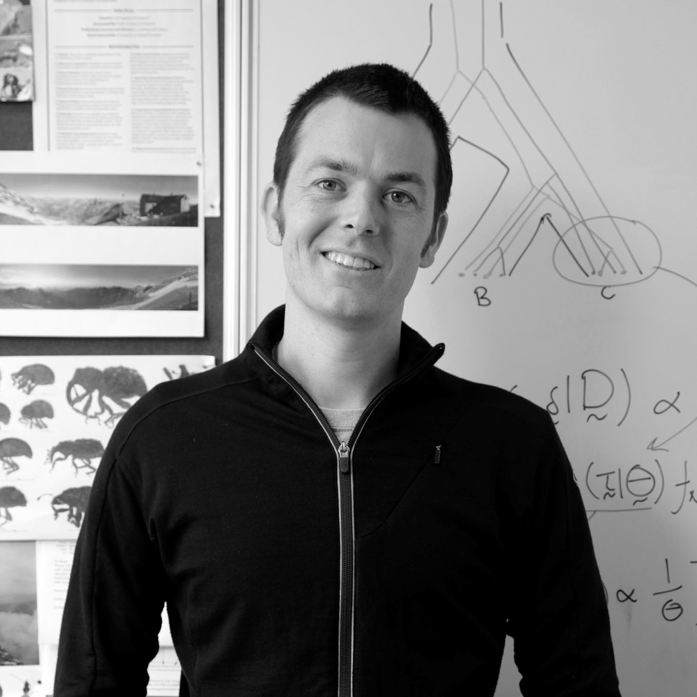
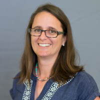
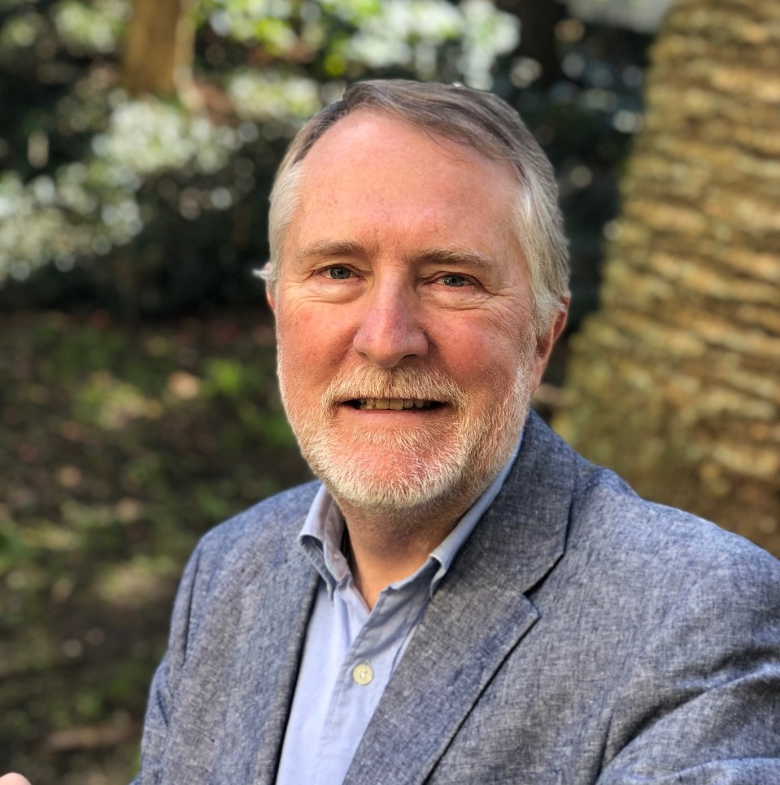
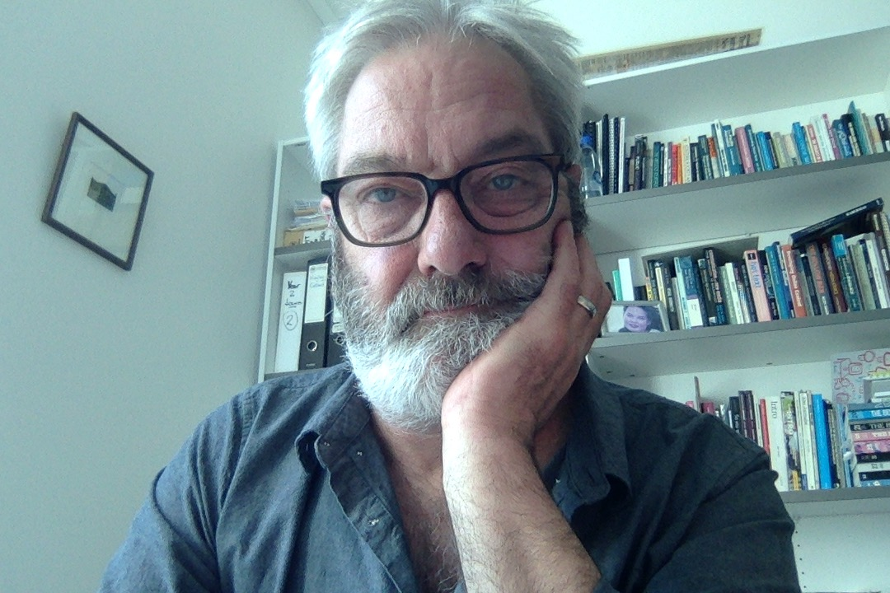
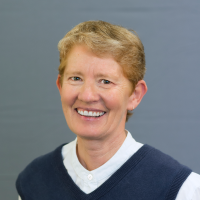
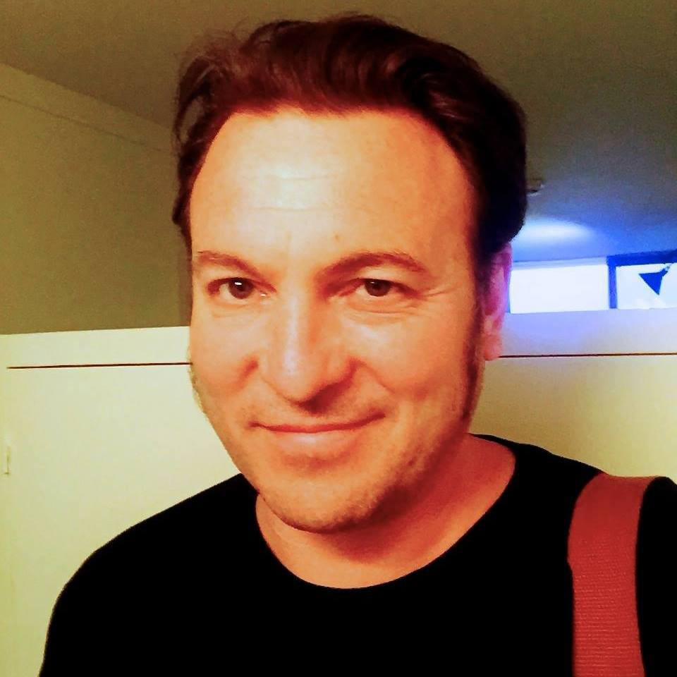
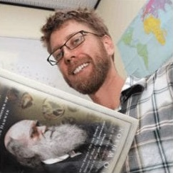

About Claxon
Claxon’s first goal is to get as many people as possible to add their name to this website, to urge the New Zealand House of Representatives to declare a Climate Emergency.
We formed Claxon to act on the undeniable scientific evidence of the global climate emergency.
Because this emergency affects every human, no matter where they live or how they vote, we coloured Claxon orange, so it is non-partisan, and urgent.
Paul Mountfort coined the name Claxon, both as a contraction of "climate-action" and as a reference to the
Klaxon warning siren.
For general inquiries, contact us at nzclaxon@gmail.com.
Organisers
|  | Alexei Drummond is a professor of computational biology at the University of Auckland, Director of the Centre for Computational Evolution, co-inventor of the academic open-source software BEAST and founder of the commercial Geneious scientific software package. His research spans computational modelling of evolution, ecology, genetics and infectious disease. He is an advocate for open science (collegial, cooperative, equitable, transparent), including open access, open data and open source. He is a keen environmentalist, hiker, bird-watcher, climber and trail runner. See http://alexeidrummond.org |
| Cate Macinnis-Ng is Associate Professor of Ecology and Rutherford Discovery Fellow at the University of Auckland. Cate is a tree ecophysiologist and her research looks at how environmental conditions (particularly climate) influence water use and growth rates of plants. Since moving to Auckland in 2010, Cate has been working on the physiology of native forests with a focus on kauri responses to drought. See academic profile |  |
|  | Gray Treadwell is an Auckland-based businessman, focused since the 1980s on growing New Zealand software development and export companies. For the last 13 years he was a director of Biomatters Ltd until its acquisition. |
| Greg Treadwell was a journalist before moving into academia in 2005 when he joined Auckland University of Technology's School of Communication Studies. He has recently been awarded a doctorate, for which he studied the freedom-of-information failures faced by New Zealand’s journalists. The public right to know remains at the centre of his research interests. A life-long interest in ecology and conservation saw him join with friends and colleagues who were behind the Claxon initiative. |  |
|  | Mary A. Sewell is a professor of Marine Biology at the University of Auckland. Mary studies marine invertebrates with a focus on how the environment influences early development, with much of her recent research focusing on the impacts of climate change (temperature, salinity, ocean acidification) on species including kina (sea urchins) and green-shell mussels. See Wikipedia. |
| Paul Mountfort is an associate professor in creative writing at AUT. Paul is Chair of the AUT Centre for Creative Writing and leader of the BA English and New Media Studies and BA Creative Writing. Paul’s research interests are in popular culture studies, transmedia and fan practices. He has published widely in the areas of comics, sci-fi, fantasy and related storyworlds and franchises. See academic profile. |  |
 |
Paul White was head of advertising and brand creativity at AUT for 18 years. Before that he was creative director and founder member of four leading advertising agencies in NZ and the UK. He has worked with fair trade, eco-friendly and environmentally sustainable brands throughout both his academic and advertising careers. These days he is a freelance writer and creative strategist. |
| Quentin Atkinson is a professor of psychology at the University of Auckland. Quentin’s research draws on lab and field experiments, computer modelling and evolutionary theory to shed light on how and why various aspects of human culture evolved. Quentin is also a keen environmentalist and in 2007 published an edited volume with Dr Niki Harré on how New Zealanders can tackle climate change. See https://www.quentinatkinson.com/ |  |
With special thanks to
Dan Kelly - research and writing
Jordan Douglas - website, database, and mail
Justin Treadwell - graphic design frontier.studio
Jasmin Darnell - logo concept art jasmindarnell.com
Julian Gillespie - video and communication (j.p.gillespie@outlook.com)
If you'd like to help in any way, we'd love to hear from you at nzclaxon@gmail.com
Dan Kelly - research and writing
Jordan Douglas - website, database, and mail
Justin Treadwell - graphic design frontier.studio
Jasmin Darnell - logo concept art jasmindarnell.com
Julian Gillespie - video and communication (j.p.gillespie@outlook.com)
If you'd like to help in any way, we'd love to hear from you at nzclaxon@gmail.com